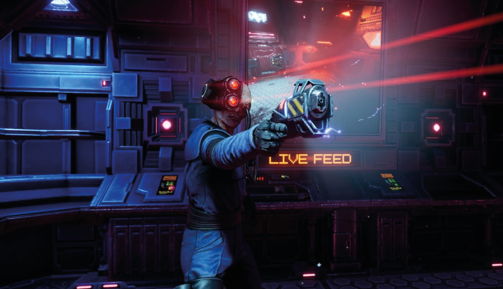
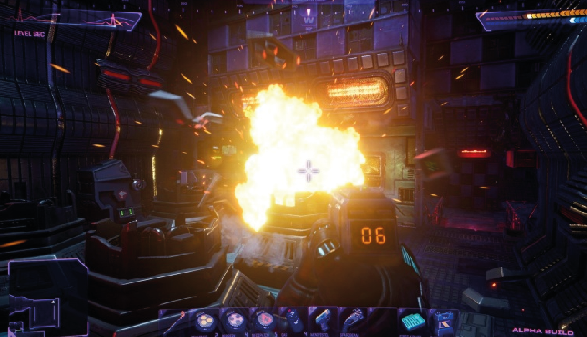
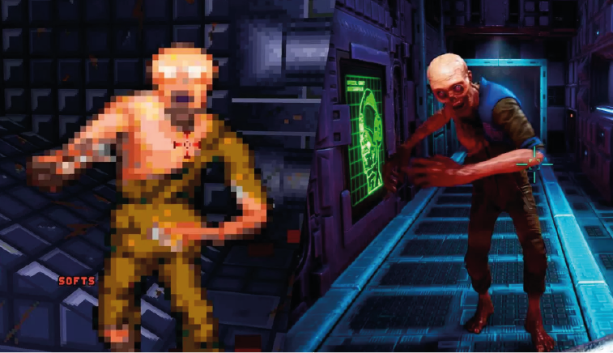
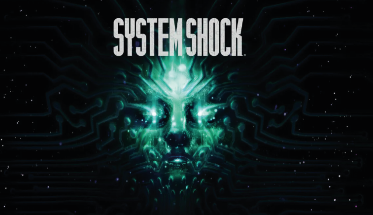

Análisis System Shock Remake.
Uno de los juegos de disparo subjetivo más importantes de la Historia está de vuelta con una edición modernizada. Te contamos que sé siente al sumergirse en el remake de System Shock e intentar vencer a SHODAN.
Sobre el papel, System Shock Remake es una remodelación con todas las de la ley del clásico de culto de 1994: los gráficos con Unreal Engine 4 son nuevos, la interfaz y los controles se han modernizado, la música y los audios se han remasterizado, se han retocado la inteligencia artificial y algunas de las mecánicas, se ha ampliado el mundo y se han introducido nuevos puzles… Aun así, el título de Nightdive Studios que llega este 30 de mayo a PC (Steam, Epic Games Store y GOG) y más tarde a PlayStation y Xbox, ofrece una experiencia que puede percibirse anticuada. Y a la vez, es fascinante.
Ya nos hemos podido sumergir en los tétricos pasillos de la estación Ciudadela para contaros si tan ambicioso proyecto ha llegado a buen puerto. Lo bueno, para los fans de la serie, es que ha sido una adaptación tremendamente respetuosa. Lo malo, para los jugones menos pacientes, es que quizá sea DEMASIADO respetuosa. Pero vamos por partes...
El argumento de System Shock nos traslada al año 2072, cuando un hacker es contratado para desactivar los protocolos éticos de una IA en una estación espacial, a cambio de recibir unos implantes a la última. Nosotros somos ese hacker que, cuando despierta, está en esa misma estación espacial controlada por la IA, que se llama SHODAN. Después de nuestro "trabajito" se ha vuelto megalómana y quiere acabar con todos los humanos, a la par que transforma a los caídos en cyborgs a su servicio. Nosotros debemos recorrer la Ciudadela para conseguir desactivar a la IA pirada antes de que prepare su ataque definitivo contra todo el planeta Tierra.
El análisis de System Shock para PC de re-play:
- El gameplay de System Shock
- Nivel de dificultad de System Shock
- ¿Cuántas horas de juego dura System Shock?
- Cuánto cuesta System Shock y dónde puedes jugarlo
- La opinión de Hobby Consolas de System Shock
Jugabilidad y gameplay de System Shock
El sistema de juego de System Shock bebe de las raíces del shooter subjetivo (avanzar por pasillos, disparar a lo que se mueva, encontrar llaves para desbloquear puertas...) pero el original ya fue más lejos de lo que presentaban Doom y compañía en la época. Y es que el juego no presenta una exploración lineal basada en ir del punto A al punto B, sino que toda la Ciudadela es un enorme complejo dividido en 9 plantas que tiene diferentes sistemas de defensa y dispositivos para desactivar. Algunos "órdenes" serán imprescindibles en los primeros compases, pero luego nos tocará explorar y descubrir el mapeado poco a poco.
De hecho, no tenemos un listado de nuestro siguiente objetivo a seguir, ni se nos marca nada parecido en el mapa o el minimapa. Tenemos que ir razonando cuál es el siguiente paso que debemos dar, en base a lo que vaya sucediendo ante nuestros ojos o los mensajes que vayamos encontrando. Una particularidad de este juego es que, aunque es muy narrativo y por supuesto encontramos enemigos, no hablamos ni interactuamos con ningún personaje secundario. En su lugar, encontramos montones de grabaciones que nos van sugiriendo códigos de acceso para teclados o nos hablan de sectores que deberíamos visitar a continuación para ir despejando el camino.
Esto puede dar un poco de pánico a los jugadores menos curtidos (o, simplemente, a los que no quieran complicarse tanto la vida), porque muchas veces nos encontraremos desorientados, sin saber a donde ir a continuación, en escenarios descomunales y llenos de pasillos laberínticos. Para más inri, aunque disponemos de un mapa general, no podemos hacer scroll por el mismo para ver el conjunto del nivel, sino que solo se nos muestra la porción más cercana a nuestra posición.
Los iconos de diferentes elementos útiles (como ascensores o máquinas expendedoras) son muy pequeños y cuesta distinguir unos de otros, así que muchas veces nos tocará avanzar hacia una posición para desplazar "a mano" el mapa y tener una visión más completa de lo que haya por ese área. La exploración es solo una de las facetas del juego. Muchas veces, nos encontraremos puzzles basados en resolver circuitos, por así decirlo. Los hay de dos tipos: los basados en conectar un punto A con un punto B a base de rotar y empalmar trozos de un recorrido y los basados en llevar una determinada carga eléctrica hasta el panel. Para ello, hay que colocar enchufes en sus orificios. En función de dónde los coloquemos y los bloqueos que pongamos al circuito, llegará una carga mayor o menor.
Estos puzzles llevan a otro problema del juego, porque incomprensiblemente las cargas eléctricas conllevan un efecto bloom (como un destello exagerado) que a veces entorpece el visionado del propio puzzle y no se puede desconectar. Quizá tardéis en daros cuenta que los enchufes tienen colores diferentes en función de la carga que aportan... En cualquier caso, una vez os acostumbréis a ello, los puzzles son interesantes y os pueden hacer dar al coco para bien, con algunos acertijos de lo más ingeniosos.
Una dinámica muy única es el acceso al cyberespacio. En el mapeado podemos encontrar un terminal que nos haga entrar en él para acceder a una especie de minijuego en el que "volamos" por entornos virtuales mientras disparamos a las protecciones de SHODAN y activamos nodos. Esto provocará reacciones en el mundo real (como que se desbloquee una puerta, por ejemplo). Al margen de ello también tenemos, claro, los momentos de disparo en el mundo real. La munición es bastaaante más limitada que en otros juegos del género, así que hay que economizar bien los disparos. Eso sí, hay muchas armas diferentes, desde escopetas a pistolas potentes tipo "magnum".
Por suerte, podemos encontrar también armas cuerpo y cuerpo y otras que no usan munición, sino energía. Esa energía se muestra debajo de nuestra barra de salud y se recarga encontrando baterías o bien en estaciones de recarga. La energía no solo sirve para disparar, sino que también puede alimentar los implantes del cuerpo que queramos usar, desde una linterna hasta escáneres de enemigos.
Nuestro interfaz de armas y objetos también tiene su miga. Por un lado, tenemos los objetos de uso directo: podemos asignarnos cuatro armas principales, 3 arrojadizas (granadas de diferentes tipos, por ejemplo) y 3 consumibles, que pueden ser esas baterías de recarga, medikits o unos parches que al aplicarnos nos restauran salud poco a poco o nos vuelven más agresivos con los enemigos. Además, tenemos un inventario de objetos que podemos desplegar en cualquier momento. Ese inventario se estructura por casillas, al estilo del maletín de Resident Evil 4. Los objetos más simples, como munición o parches, solo ocupan una casilla, pero las armas pueden ocupar varias. Si lo llenamos, no podremos coger más objetos.
Por supuesto, podemos arrojar los que queramos descartar o bien vaporizarlos, lo que los convierte en chatarra. Esa chatarra (junto con otros objetos inútiles que podemos hallar por doquier) se puede llevar a las estaciones de reciclaje, que nos lo cambiarán por monedas llamadas tricréditos. Esos tricréditos, a su vez, se usan en expendedoras para obtener munición, parches o mejorar armas. En cualquier caso, y teniendo en cuenta que el juego es muy fiel al original tanto en el diseño de niveles como en la dinámica de juego, se agradece el esfuerzo por intentar hacer la vida algo más fácil a los jugadores, desde el rediseño de la interfaz hasta el haber añadido las máquinas de ayuda (la recicladora fue una novedad que llegó con el System Shock 2 original).
¿Es difícil System Shock?
Una función que estaba en el original y que aquí se mantiene (con solo 3 grados de elección, había 4 originalmente) es la de seleccionar individualmente la complejidad de los combates, los puzzles, la exploración o las misiones de cyberespacio.
Aunque esto en varias ocasiones es una ayuda, también puede suponer un problema, porque pueden forzarnos a reaparecer muy lejos de donde estábamos antes de morir, incluso en una planta diferente de la estación. Para colmo, esto genera un autoguardado por lo que, incluso aunque hubiéramos guardado la partida justo antes de la zona donde nos mataran (podemos guardar siempre que queramos), el autoguardado la sobreescribirá y seremos forzados a arrancar desde la última zona de reaparición.
Ponerlo todo en la dificultad más baja se nota, por supuesto, pero siempre habrá algo de desafío. Por su parte, la dificultad más alta añade un crono para que dispongamos de un tiempo limitado para acabar con SHODAN. ¡Como si no tuviéramos ya bastante estrés!
Sin embargo, donde más se percibe que como remake está a medio gas es la parte de shooter. A pesar de los muchos cambios, mejoras y retoques que hay en este sentido, se percibe muy viejo, y tampoco faltan los fallos. Sí que nos gusta la tensión que provoca, sobre todo en los primeros momentos, el escuchar a los enemigos al otro lado de una puerta mientras estamos perdidos por el laberinto: el no saber si podremos derrotar con lo que tenemos a esa amenaza, o si el tipo de munición que llevamos le afectará, o si estará colocado en un lugar que nos permita avanzar agachados sin que nos detecte (si es que el sigilo, muy errático, funciona esta vez).
¿Cuántas horas dura System Shock?
Además, hay otro tipo de combate, el que tiene lugar en el Ciberespacio, el espacio digital al que accedemos al hackear sistemas clave de Ciudadela. Aunque modernizado, es un shooter que recuerda a la época de los gráficos vectoriales, donde nos podemos mover en todos los ejes sin tener claro lo que está arriba y lo que está abajo, y que básicamente toma la forma de un bullet hell tridimensional. Si bien al principio es bastante pocho, simple y aburrido, y nunca llega a ser muy profundo, conforme se introducen nuevos enemigos y más herramientas en nuestro arsenal se hace más intenso, difícil y divertido.
Todo esto nos lleva a la duración del juego. System Shock es un título complejo, en el que seguramente os perderéis de vez en cuando por sus intrincados pasillos, pero si fuerais a saco, sabiendo exactamente qué hacer y dónde ir, sus desarrolladores calculan que se podría superar en unas 5-6 horas. La media de los mortales tardaremos, en realidad, entre 20 y 30 horas. Nada mal.
Precio y plataformas disponibles
El proyecto de System Shock se ha concebido desde un principio para PC, plataforma para la que se pone a un precio de 39,99 euros (a través de Steam). Nightdive confirma que también siguen adelante con el desarrollo de las versiones para consola, pero que aún no pueden dar detalles definitivos sobre su lanzamiento y precio final. Seguramente nos toque esperar unos meses para tener novedades.
Recuperando (¿quizá demasiado) el pasado
Como hemos comentado ya, el remake de System Shock ha querido ser muy fiel en el desarrollo con respecto al juego en que se inspira. Esto también se traslada al plano técnico, donde han llevado a cabo una apuesta arriesgada: aunque la iluminación, los efectos especiales y todo lo demás son claramente más modernos que el original (en el que los enemigos eran sprites planos como en Doom), se ha buscado a propósito dar un toque "retro" al conjunto, con algunas texturas y objetos muy cuadradotes y pixelados. Como decimos, es algo intencionado, que incluso tiene cierta gracia en algunos momentos, pero a nosotros, personalmente, no nos ha acabado de gustar. Y esto se debe a que parece que el juego se queda entre dos tierras.
Es decir, si todas las texturas fueran así o todos los objetos siguieran el mismo patrón, se entendería, incluso aunque la iluminación fuera moderna (el shooter Prodeus siguió ese patrón y salió bien, por ejemplo), pero parece que algunas cosas quieren parecer modernas y otras no. No se ve mal, ni muchísimo menos y, de hecho, el conjunto tiene cierto encanto cyberpunk y retro, pero da la sensación de que no se ha sacado todo el potencial de un proyecto así. Si se hubiera ido con el retro a tope o, al revés, totalmente moderno, la experiencia seguramente habría sido más convincente. En cualquier caso, esto puede ir mucho en gustos y desde luego se agradece la originalidad del planteamiento.
Los enemigos también son una de cal y una de arena. Los más básicos, una especie de zombies mutantes, no acaban de impactar, incluso parecen algo "cuquis" de más. Otros, como los icónicos cyborgs, sí resultan más espectaculares. Las voces están en inglés con subtítulos e interfaz en castellano. La mayoría de los audios se corresponden con las grabaciones que escuchamos y no tiene mayor trascendencia, pero el gran punto fuerte (y, de hecho, uno de los grandes atractivos), son los monólogos y los mensajes amenazantes que nos lanza SHODAN para intentar detenernos. SHODAN está considerada una de los mejores enemigos de la historia de los videojuegos y es fácil ver por qué: su desprecio por los humanos, el hecho de que se considere una diosa y sus amenazas crueles ayudan mucho a meternos en ambiente, especialmente por las distorsiones y bruscos cambios en su voz, como dando a entender que es un programa corrupto. Casi da miedo de verdad.
Las voces planas y contundentes de los cyborgs también consiguen intimidar, mientras que el resto del aspecto sonoro es más bien intrascendente e incluso algo repetitivo, con melodías algo lúgubres (un tono muy acertado para el contexto) pero bastante genéricas. Si conseguirá arrancaros alguna sonrisa la agradable música muzak de los ascensores. Toca ir llegando a las conclusiones sobre el juego, pero para ello es importante recalcar de nuevo lo importante e influyente que fue el original, algo que se traslada a este remake. Juegos como Bioshock (inspiración directa y explícita, tanto en muchas facetas del desarrollo como en el propio nombre), Deus Ex o seguramente Portal no existirían de no ser por esta obra.
Las voces planas y contundentes de los cyborgs también consiguen intimidar, mientras que el resto del aspecto sonoro es más bien intrascendente e incluso algo repetitivo, con melodías algo lúgubres (un tono muy acertado para el contexto) pero bastante genéricas. Si conseguirá arrancaros alguna sonrisa la agradable música muzak de los ascensores. Toca ir llegando a las conclusiones sobre el juego, pero para ello es importante recalcar de nuevo lo importante e influyente que fue el original, algo que se traslada a este remake. Juegos como Bioshock (inspiración directa y explícita, tanto en muchas facetas del desarrollo como en el propio nombre), Deus Ex o seguramente Portal no existirían de no ser por esta obra. Su estilo de juego tiene una personalidad marcada. Sí, quizá es algo hostil para según qué tipo de jugadores, pero también atractiva por esa sensación de soledad y supervivencia que proporciona. Realmente sientes que no te guían, que "te curras" avanzar en la experiencia.
Y se nota que hay cariño y tiempo de dedicación al proyecto. Un proyecto que, de hecho, rehicieron desde cero a mitad de desarrollo, porque sentían que no hacía justicia al original. En ese sentido, es digno de alabanza el esfuerzo dedicado, pero a la vez no se acaba de entender cómo el juego presenta carencias como enemigos que se quedan atascados al caer (uno se nos quedó atravesado en el cuerpo, incluso), un inventario con una fuente tan pequeña o ese mapa que no podemos desplazar. Todo esto complica innecesariamente la experiencia, pero no la arruina.
Hay que decir que el equipo detrás de esta adaptación, Nightdive, se especializa más actualizar y adaptar juegos ya existentes, mejorando sus gráficos y su gameplay. Esta proyecto tan grande, construido desde cero, quizá les ha pasado algo de factura en ciertas facetas. Aún así, no hay duda de que System Shock es una aventura con personalidad y una propuesta de juego diferente a lo que acostumbran a darnos los shooters actuales. Si te van los desafíos y pelear por la victoria, aquí podrías tener la horma de tu zapato. Si no, quizá se te haga demsiado cuesta arriba. A fin de cuentas, como diría SHODAN, solo somos unos gusanos humanos.
Puntuación
Gráficos
Jugabilidad
Sonido
Duración
Un jugador
Multijugador
🟣 VALORACIÓN
Aunque solo sea por el valor histórico del original, merece la pena probarlo. Su jugabilidad no lineal puede atragantarse para algunos jugadores, pero si te van los desafíos, aquí puedes encontrar un curioso incentivo.
LO MEJOR
La atmósfera y la personalidad desquiciada de SHODAN. Que sea tan diferente en su propuesta de exploración.
LO PEOR
A veces puede ser demasiado hostil para el jugador. Fallos técnicos que emborronan algo la experiencia.